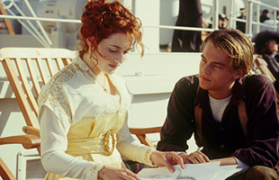
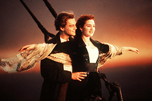
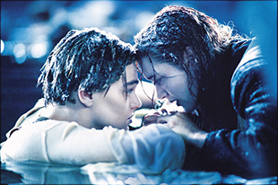
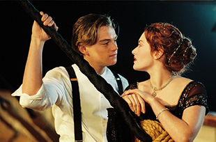

电影院之推荐篇——每个人都是自己生活的导演
梦想始于剧本，而终结于电影。让一个人置身于变幻无穷的环境中，让他与数不尽或远或近的人物错身而过，让他与整个世界发生关系：这就是电影的意义。
——安德烈·塔可夫斯基（苏联）
首页
小时代
暮光之城
魔戒三部曲
等风来
泰坦尼克号
创作背景
泰坦尼克号是20世纪初由英国白星航运公司制造的一艘巨型邮轮，是当时世界上最大的豪华邮轮，号称“永不沉没”和“梦幻之船”。1912年4月10日，泰坦尼克号从英国南安普顿起航前往纽约，开始了这艘传奇巨轮的杰克与罗丝杰克与罗丝处女航。4月14日晚，泰坦尼克号在北大西洋撞上冰山而倾覆，1500人葬生海底，造成了当时在和平时期最严重的一次航海事故，也是迄今为止最著名的一次海难。
在海难发生之后的数年间，围绕泰坦尼克号的神话开始流传，关于勇敢和懦弱的故事出现在无数历史记载、诗歌、音乐和电影中。经过数十年的研究，1985年9月1日，由科学家罗伯特·巴拉德领导的探险队终于在在纽芬兰东南约380英里海域找到泰坦尼克号残骸，一切与之相关的疑问和争议也随之迎刃而解。
詹姆斯·卡梅隆从泰坦尼克号的海底残骸获得灵感，将一段航海传奇演化成令人荡气回肠的爱情故事。卡梅隆说在集体想象当中，泰坦尼克号的悲剧几乎成了神话，随着时间的流逝，它所蕴涵的人性和活力已经消失殆尽。我希望萝丝与杰克的爱情能成为情感的指明灯，去让观众全身心的投入，目睹历史的重现。
影片评价
《泰坦尼克号》是个神话，而杰克与露丝的爱情则是神话中的神话。人们在这虚构的爱情蓝图中，渴望或寻找这种神话的力量。尽管露丝和杰克之间从相识、相恋到完结仅有短短的3天时间，但观众却记他们记了十几年，或许更长。这多少也反映出过惯了平淡生活的现代人们对于传奇或者浪漫经历的某种渴望。
这段爱情故事由一位101岁的老者娓娓道来，所以她几乎勾起了地球上无关年龄层次的所有人对自己年少回忆的冲动。1997年的电影院里，每一个人都问心无愧地把《泰坦尼克号》当成了自己的电影。当《泰坦尼克号》再次驶入庸常反复的生活空间，观众的心瞬间又有了猛烈跳动的冲动。也许我们无法挽留生活中太多的记忆，但是至少在观影的几个小时里，再次抓住了如歌如泣的爱情。
毫无疑问，一种现象，从《泰坦尼克号》开始，十年寒暑，奇迹不灭。经典台词一呼百应，“我心依旧”大街小巷都在哼，之后的大导演大制作都将其当作第一对手，甚至还时常看到沉船时的乐队演出和“女人和小孩先上”等鲜活的案例讨论——比这部电影更好的电影比比皆是，然而杰克和露丝的爱情故事却超越了电影的范畴，在各个领域熠熠生辉。
卡梅隆的电影总是能输出那迷人的价值观，反抗、自由、平等，杰克对上层社会的回击帅极了，优雅极了，不卑不亢。他比他们更有教养，而不是像中国的作品中，小人物逼急了总是气急败坏地喊一句，“去你大爷！”就撒手而走。所以卡梅隆的电影，在剧情上都并不为人称道，然而却有经典的力量，全球大卖是自然不过的事情。《泰坦尼克号》也是如此，它们都是让人逃走的旅行，和爱情是一样的。
剧照欣赏



